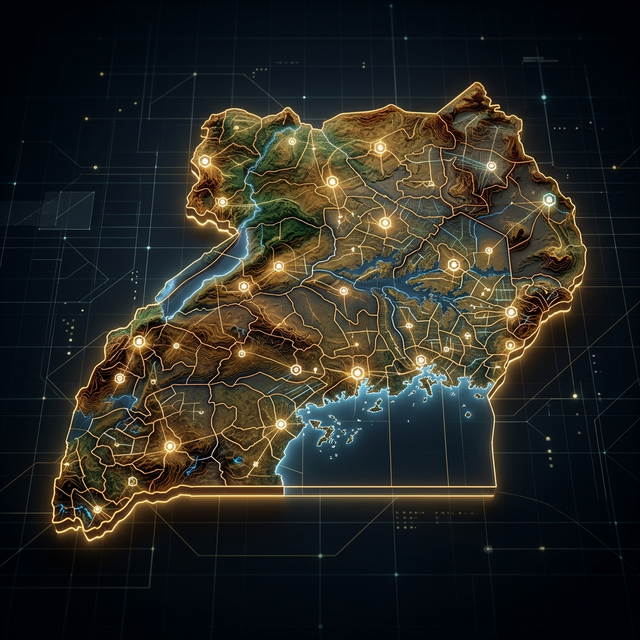
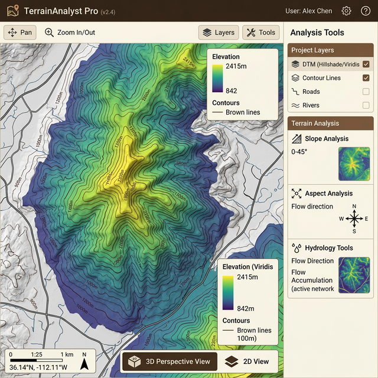
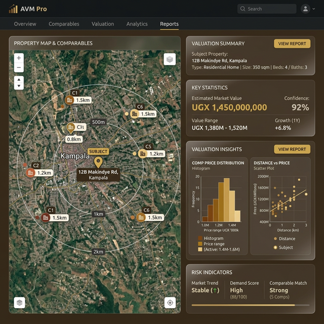

An all-in-one professional GIS platform powering cadastral surveys, terrain analysis, property valuation, and real-time collaboration across Uganda — fully aligned with global FFPLA standards.
GSP.NET unifies the entire geospatial workflow — from raw survey data to professional-grade reports — in a single browser-based application.
GSPNET provides role-based access control to ensure the right tools are available to the right professionals.
Mapping features, vector data, public property marketplace, and spatial search capabilities.
Quality assurance supervisors managing corroborative surveys, survey quality, and technical dispute resolution.
Private vault for comparable sales, automated valuation models, and generation of professional valuation PDF reports.
Real estate and property management role, focusing on capturing and managing untitled land parcels.
Operationalizing the principles of FIG Publication No. 87: Fit-for-Purpose Land Administration across three core pillars.
Our software philosophy follows the Rule of Sustainability. We prioritize configurability and an ecosystem approach, providing critical Services of Engagement and Insight that adapt locally without expensive custom coding.
Webmap.geospatialnetworkug.xyz fully operationalizes the Spatial, Legal, and Institutional pillars using frontier tech (AI, Cloud, 3D).
GSPNET is engineered with Privacy by Design, fully complying with the Personal Data Protection Office (PDPO) mandates.
Our cloud-native architecture implements advanced technical and organizational measures to safeguard your information against unauthorized access, loss, or destruction.
Powered by OpenLayers with seamless base map switching, real-time feature rendering, and professional cartographic output.

One database. Many clients. Seamlessly connect field equipment to the cloud using WFS and WMS standards.
From survey points to production-grade DTMs, contours, 3D visualization, slope maps, and hydrology — all computed in the browser.

Comparable-sales based auto-valuation with statistical analysis, confidence scoring, and professional PDF report generation.

Import CSV, DWG, DXF, and GeoJSON files. Drag-and-drop with automatic coordinate system detection.
Create parcels from survey coordinates with edge function processing, area calculation, and unique ID generation.
Distance, area, and bearing measurements with profile cross-sections and earthwork volume calculations.
240+ professional survey and cartographic symbols organized by category with custom placement.
Geo-tagged quality control flags with categories, status tracking, and real-time team chat messaging.
Mark properties for sale, attach prices, and enable public search. Pricing data seamlessly feeds into valuation models for valuers.
Dedicated 24-hour intelligent chatbot trained on FFPLA standards to assist with workflows and documentation.
Easens data sharing between AutoCAD and Webmap primary data collection layers, solving data fragmentation.
Enterprise-grade architecture leveraging cloud-native services for maximum performance and reliability.
Continuously evolving to meet the growing needs of Uganda's geospatial professionals.
Join the growing community of surveyors, valuers, and land professionals who trust GSP.NET to power their work.
Launch GSP.NET